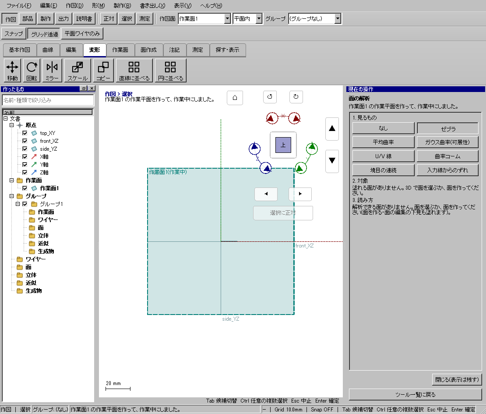
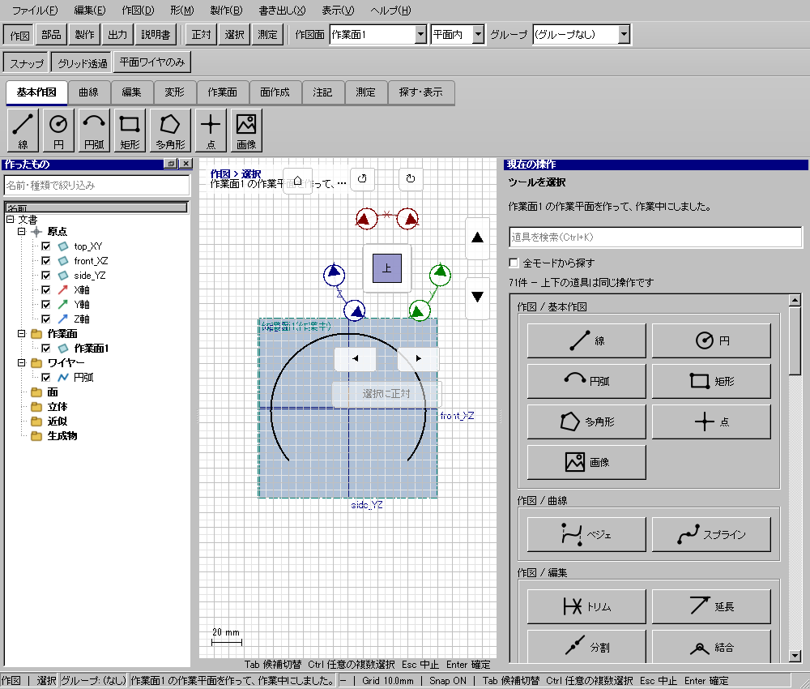

XY面から高さ5mmの作業面を作る
使う機能：作業平面を作る
右ペインの作り方で必要な点・線・平面の欄が変わります。下見の四角は作業面の表示で、矩形ワイヤーではありません。
Z=5mmの平面を使って作図できる。
1 準備 — 元の図形から作る
top_XYを表示する。
まだ用意できていなければ、次の手順を先に行ってください。既にモデルがある場合も、例の座標・大きさ・面の向きを自分のモデルへ読み替えます。
- 指定座標の直線・円・円弧を準備する — 図形の作成から順に練習できます。
練習前にKCD2を別名保存します。数値の長さはmm、角度は度です。平面内のu/vと世界XYZを区別します。
2 使う道具を開く — 押す場所
- 作図 → 作業面 → 作業面
別の入口：Ctrl+K → 作業平面を作るを検索 → 候補の用途を確認して開きます。別モードなら「全モードから探す」をオンにします。

3 操作手順 — 一つずつ進める
作図面と名前を確認する
この例はtop_XYから5mm離す面です。元の作図面を確認してから作業面ツールを開きます。
画面で確認：基準平面の位置が分かります。
作り方を選ぶ
右ペインの「作り方」を「平面から離す」にします。
画面で確認：基準平面と離す距離の欄が出ます。別方式は下の個別例を見ます。
基準と距離を入れる
基準平面をtop_XY、離す距離を5mmにします。
画面で確認：Z=5側に四角い下見が見えます。これは作成した線ではありません。
使用するかを選ぶ
「作ったら作業中にする」をオンにします。
画面で確認：作成後の新しい線がこの面内へ描かれる設定です。
面を作る
「平面を作る」を押し、上部作図面が新しい面になったことを見ます。
画面で確認：一覧に新しい作業面が増え、元のワイヤーは移動しません。
正対して試す
正対を押して線を1本描き、等角表示でその線の高さを確認します。
画面で確認：作業面切替と単なるカメラ操作を区別できます。
4 設定する欄と数値
ボタン名・欄名と、今回使う値を対応させてください。項目が出ていない場合は作り方・モードが合っているか確認し、ペイン内をスクロールします。
| 見る欄・役割 | この例の設定と意味 |
|---|---|
| 作り方 | 平面から離す |
| 基準平面 | top_XY |
| 離す距離 | 5mm |
| 作ったら作業中 | オン |
選択の確認：役割欄の名前と3Dの強調を照合します。重なって拾いにくい時はTabで候補を替えます。全体を使う例では左一覧の要素名を選び、3Dの1辺選択と区別します。

この実画面は既存操作試験の一場面で、下の数値例の完成画像とは限りません。設定・選択の操作画面。具体的な完成例は段階写真のある作業例を参照してください。
5 確定して結果を確認
下見と作ったら作業中にするの設定を確認し、「平面を作る」を押します。下見が見えているだけでは作業面は追加されていません。
Z=5mmの平面を使って作図できる。
形を作る操作では、元と結果の名前を分けて一覧で確認し、必要に応じて元を一時非表示にします。表示だけの機能では形状や要素数を変えることが目的ではありません。
6 取消・やり直し・保存
未作成は入力を取り消します。作成した面はCtrl+Zで戻します。元のワイヤーの位置は変わりません。
モデルの編集正本はKCD2、説明書の編集正本はKCIです。外部へ出力するだけの機能では、出力ファイルと編集元を両方残してください。
進めない場合 — 症状から戻る場所を探す
| 起きていること | 確認して直す場所 |
|---|---|
| 下見だけで作図を始めた | 平面を作るを押す |
| 面が定まらない | 点の重複、3点の一直線、法線と横方向の平行を確認 |
この機能の入力条件：作業平面を作ります。作り方は12通りあります。
計算中は処理表示を見ます。失敗が出たら、対象・入力条件を変えずに何度も押すのでなく、案内にある対象と条件を確認します。
別の方式・条件で使う
標準面
まず主手順で入力の役割を確認し、この例の値と操作へ置き換えます。
この例の準備：選択なし
「作り方＝標準面」を選びXYを指定します。作ったら作業中にするを確認して「平面を作る」を押します。原点の既存top_XYと新しい面の名前を区別してください。
- 作り方を標準面
- XYを選択
- 確定
結果の見分け方：XY平面ができる
この実画面は既存操作試験の一場面で、下の数値例の完成画像とは限りません。方式間で共通の入力欄を確認する参考画面です。この方式・上記の数値で確定した結果の画像ではありません。
位置と向きを数値指定
まず主手順で入力の役割を確認し、この例の値と操作へ置き換えます。
この例の準備：選択なし
点＝0,0,5、法線＝0,0,1、横方向＝1,0,0を数値で入れます。法線と横方向が平行だと面内の向きが決まりません。Z=5へ作る例です。
- 通過点(0,0,5)・法線(0,0,1)・横方向(1,0,0)を入力
- 確定
結果の見分け方：Z=5の平面ができる
この実画面は既存操作試験の一場面で、下の数値例の完成画像とは限りません。方式間で共通の入力欄を確認する参考画面です。この方式・上記の数値で確定した結果の画像ではありません。
3点
まず主手順で入力の役割を確認し、この例の値と操作へ置き換えます。
この例の準備：点(0,0,0),(10,0,0),(0,10,0)
3点の欄へP1＝0,0,0、P2＝10,0,0、P3＝0,10,0を指定します。数値欄も使えます。点を重ねたり一直線に並べたりしないでください。
- 3点を順に追加
- 同一直線上でないことを確認
- 確定
結果の見分け方：3点を通る平面ができる
この実画面は既存操作試験の一場面で、下の数値例の完成画像とは限りません。方式間で共通の入力欄を確認する参考画面です。この方式・上記の数値で確定した結果の画像ではありません。
平面から離す
まず主手順で入力の役割を確認し、この例の値と操作へ置き換えます。
この例の準備：top_XY
基準平面欄でtop_XY、離す距離に5mmを入れます。正負でどちら側か下見を見て作成します。元のtop_XYと線は移動しません。
- 基準平面を追加
- 距離5mm
- 確定
結果の見分け方：平行なZ=5の平面ができる
この実画面は既存操作試験の一場面で、下の数値例の完成画像とは限りません。方式間で共通の入力欄を確認する参考画面です。この方式・上記の数値で確定した結果の画像ではありません。
辺まわりに角度
まず主手順で入力の役割を確認し、この例の値と操作へ置き換えます。
この例の準備：XY面とX軸方向の直線
基準平面はtop_XY、回転軸にX方向の直線を入れ、角度30°を設定します。先に座標直線0,0→10,0を用意すると選びやすくなります。
- 平面と辺を追加
- 角度30度
- 確定
結果の見分け方：辺を軸に傾けた平面ができる
この実画面は既存操作試験の一場面で、下の数値例の完成画像とは限りません。方式間で共通の入力欄を確認する参考画面です。この方式・上記の数値で確定した結果の画像ではありません。
点を通り平行
まず主手順で入力の役割を確認し、この例の値と操作へ置き換えます。
この例の準備：top_XYと点(0,0,5)
基準はtop_XY、通る点は0,0,5です。指定点を通り平行なZ=5面になります。面の位置と法線を別々に確認します。
- 平面と点を各欄へ追加
- 確定
結果の見分け方：点を通るXY平行面ができる
この実画面は既存操作試験の一場面で、下の数値例の完成画像とは限りません。方式間で共通の入力欄を確認する参考画面です。この方式・上記の数値で確定した結果の画像ではありません。
2面の中間
まず主手順で入力の役割を確認し、この例の値と操作へ置き換えます。
この例の準備：Z=0とZ=10の平面
最初に平面から離すでZ=10面を作ります。次にtop_XYとそのZ=10面を2平面の欄へ指定すると中間のZ=5です。平行でない入力との違いを診断で確認します。
- 2平面を追加
- 確定
結果の見分け方：中間のZ=5の平面ができる
この実画面は既存操作試験の一場面で、下の数値例の完成画像とは限りません。方式間で共通の入力欄を確認する参考画面です。この方式・上記の数値で確定した結果の画像ではありません。
2辺を含む
まず主手順で入力の役割を確認し、この例の値と操作へ置き換えます。
この例の準備：原点で交差するX方向・Y方向の2直線
原点で交差するX方向線とY方向線を辺の欄へ入れます。同一直線やねじれた2辺では一意に面を決められません。先に3D直線の座標を確認します。
- 2辺を追加
- 確定
結果の見分け方：2辺を含む平面ができる
この実画面は既存操作試験の一場面で、下の数値例の完成画像とは限りません。方式間で共通の入力欄を確認する参考画面です。この方式・上記の数値で確定した結果の画像ではありません。
点で曲線に直角
まず主手順で入力の役割を確認し、この例の値と操作へ置き換えます。
この例の準備：Z方向の線
3D直線0,0,0→0,0,10を曲線欄へ入れ、線上位置0.5にします。Z=5でZ方向に直角な面です。0.5は5mmという距離ではなく線上の相対位置です。
- 線を追加
- 線上位置0.5
- 確定
結果の見分け方：線の中央で直角な平面ができる
この実画面は既存操作試験の一場面で、下の数値例の完成画像とは限りません。方式間で共通の入力欄を確認する参考画面です。この方式・上記の数値で確定した結果の画像ではありません。
点を通り接する
この方式は現在の画面では使えません。成功例として実行しないでください。
この例の準備：現UIは支持面入力に未対応
現UIでは支持面を渡す入力が未接続のため選択できません。曲面上で作図する場合はフェイスで作図の接平面、または位置と向きを数値指定する作り方を使います。
- この項目は選択不可
- フェイスで作図、または位置と向きを数値指定を使う
結果の見分け方：未対応。作成成功例ではありません
この方式は未対応のため、成功結果の画像は掲載しません。上の代替操作を使ってください。
円筒の中心
この方式は現在の画面では使えません。成功例として実行しないでください。
この例の準備：現UIは支持面入力に未対応
現UIではこの作り方を選べません。円から自動で円筒中心面を作れるとは説明しません。分かっている中心と法線を位置と向きへ数値指定してください。
- この項目は選択不可
- フェイスで作図、または位置と向きを数値指定を使う
結果の見分け方：未対応。作成成功例ではありません
この方式は未対応のため、成功結果の画像は掲載しません。上の代替操作を使ってください。
辺を通り接する
この方式は現在の画面では使えません。成功例として実行しないでください。
この例の準備：現UIは支持面入力に未対応
現UIでは支持面入力が未対応です。辺と面を渡せる成功手順ではありません。必要な接平面をフェイスで作図か数値の位置・法線で準備します。
- この項目は選択不可
- フェイスで作図、または位置と向きを数値指定を使う
結果の見分け方：未対応。作成成功例ではありません
この方式は未対応のため、成功結果の画像は掲載しません。上の代替操作を使ってください。
参考画面の出典と確認範囲
試験名：HP-IMG-02 curved projection and wrapping。試験全体の結果：passed。画像はコマンド呼出し直後で、入力待ち・下見の場合もあります。各段階の完成証拠ではありません。